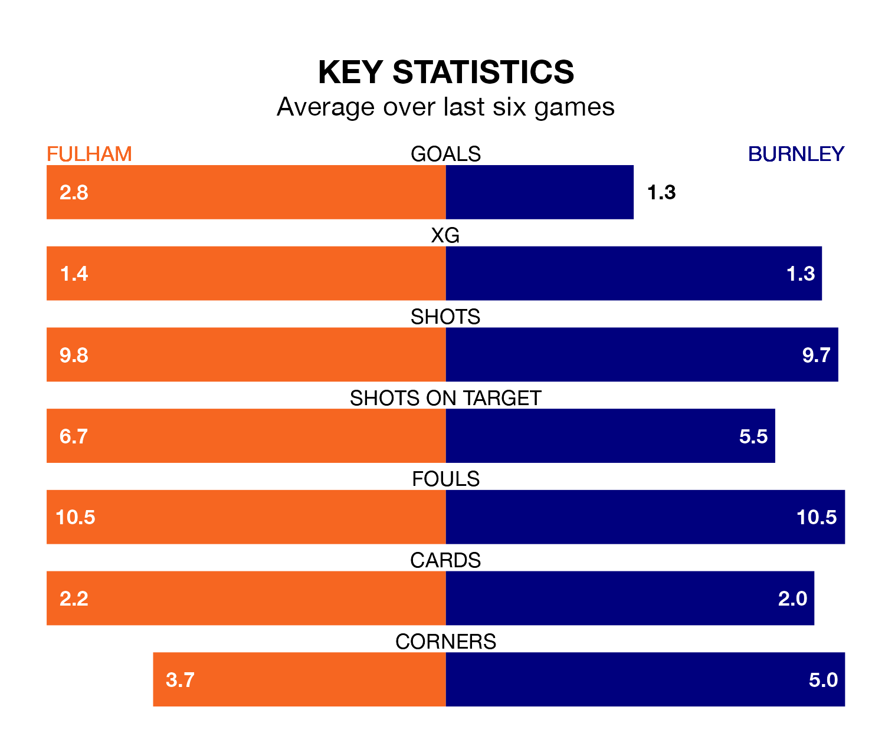

Burnley come to Craven Cottage to play Fulham on Saturday in poor form, having collected just four points from their last six games.
The visitors have won one and drawn one of their last six fixtures, while the Cottagers have three wins and three losses.
Burnley are 19th in the table after 17 games, of which they have won two and drawn two, earning eight points.
Fulham are seven places ahead of the Clarets in 12th, with six wins and three draws putting them on 21 points.
In the last 10 years, Fulham and Burnley have played each other on seven occasions. Fulham won one of them, Burnley five, and they drew once.
On average, the Cottagers scored 1.3 goals and the Clarets 2.3 in those matches.
Their last meeting was on May 10 2021, when Burnley won 2-0 away.
With Bernd Leno between the sticks, the Cottagers can rely on one of the league's safest pair of hands. He has kept five clean sheets in his 17 appearances this season in the Premier League.
In the away team's net, James Trafford has one clean sheet in 17 games. He has conceded a goal every 45 minutes, 30% more often than the 59 minutes between goals for Leno.
With 16 goals in 17 games so far this season, Burnley are the league's second-lowest scorers with 0.9 goals per game. And they are conceding more than average, letting in 36 goals at a rate of 2.1 per game.
The hosts, meanwhile, are average scorers, with 1.5 goals per game. They have conceded 1.7 goals per game.
Fulham's last match was on December 16, a 3-0 loss against Newcastle United.
Burnley lost 2-0 against Everton last time out, also on Saturday.
